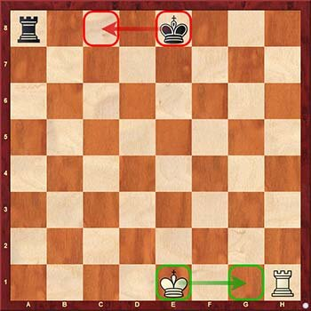

Как и в любом другом виде спорта или игре, в шахматах есть свои правила и этикет, которым должны следовать игроки. Так каковы правила игры в шахматы?
Законы шахмат или правила игры определяют, как следует вести игру.
Стартовая позиция в шахматах:
В шахматы играют на клетчатой двуцветной доске с 64 полями и 32 фигурами:
Фигуры начинают игру с этих позиций:
Правила таковы, что каждый игрок играет по очереди. Белые ходят первыми. На каждом ходу фигура перемещается с клетки на другую клетку. Если она приземляется там, где у противника есть фигура, то эта фигура забирается и ее убирают с доски.
Всего существует шесть видов фигур, и каждая из них ходит по-своему.
Король ходит на одно поле в любом направлении, прямо или по диагонали.
Ферзь ходит в любом направлении по прямой на столько полей, на сколько хочет.
Ладья ходит прямо (назад, вперёд или вбок) на столько полей, сколько хочет.
Слон ходит по диагонали (по полям одного цвета) сколько хочет.
Конь ходит как буква «Г», идя на два поля в одном направлении, затем на одно в сторону. Он всегда приземляется на поле другого цвета, чем то на которой он стоял, но не на поле рядом с ним. Конь - единственная фигура, которой разрешено перепрыгивать через другие фигуры.
Пешка ходит на одно поле вперёд при обычном движении и на одно поле по диагонали при захвате.
Особые правила для пешек:
Двойной прыжок:
Нормальный ход пешкой занимает одно поле за раз, но все пешки могут ходить на два поля вперёд при первом ходе. Если пешка раньше не ходила, у неё есть выбор пойти на одно или два поля. Пешкам никогда не разрешается брать на два поля по диагонали.
Превращение пешки:
Пешки идут только вперёд. Все остальные фигуры могут ходить назад. Когда пешка достигает последней горизонтали, она превращается в любую фигуру. Пешка может стать ферзём, ладьёй, слоном или конём, но не королём. Можно иметь более одного ферзя. Новая фигура заменяет пешку на «поле превращения».
Взятие на проходе:
Если пешка делает двойной прыжок и проходит через поле, где она может быть взята пешкой противника, то пешка противника может взять ее, как если бы пешка только что переместилась на одно поле, но только на следующем ходу.
Шахматные ходы:
Такие фигуры как Ферзь, Ладьи, а также Слоны перемещаются по открытым линиям на любое количество полей. Но они не могут перепрыгивать через другие фигуры. Любые фигуры, стоящие на пути, свои или соперника, не дают им двигаться. На диаграмме у ладьи 7 возможных ходов, включая взятие чёрной пешки. Она не может идти на поле за пешкой или забрать ферзя.
Коней нельзя заблокировать. Они могут перепрыгивать через любые фигуры, стоящие между ними и полем, на которое они движутся. Кони не забирают фигуру, когда перепрыгивают через неё.
Правила взятия шахматных фигур:
Фигура забирается или «съедается», когда игрок перемещает фигуру на то же поле, где стоит фигура соперника. Взятые фигуры снимаются с доски и исключаются из игры. Если есть возможность взятия фигуры, то игрок не обязан её забирать. А также нельзя брать свои фигуры.
Здесь чёрный ферзь может взять белую пешку на d2.
Пешка - единственная фигура, которая производит взятие иначе, чем ходит. Пешка может продвинуться на поле перед ней, когда это поле пусто, но не в том случае, если у другого игрока там есть фигура. Пешка может бить по диагонали вперёд, когда у соперника есть фигура, но не может идти туда, если поле пусто.
На диаграмме у фигур есть следующие варианты:
Белая пешка слева может идти, но не может брать.
Белая пешка справа может взять, но не может ходить.
Чёрная пешка слева может идти вперёд или брать.
Чёрная пешка справа не может ни ходить, ни брать.
Правила шаха:
Король находится под шахом, когда противник может взять его на следующем ходу. Короля нельзя оставлять под шахом. Он должен быть немедленно спасён текущим ходом, который выведет его из-под шаха. Игрокам запрещено оставлять своего короля под шахом или делать ход, ставящий его под шах. В игре нельзя выиграть, взяв короля, который идёт под шах или не выходит из-под шаха. В товарищеских играх принято говорить «шах», когда королю сделан шах, но на этот счёт нет никаких правил.
Выход из-под шаха:
Есть три способа выйти из-под шаха:
1. Переместите короля на безопасное поле.
2. Забрать фигуру, которая даёт шах.
3. Заблокировать линию между королём и шахматной фигурой.
Король может взять фигуру, если после взятия он не находится под шахом. Король не может ходить рядом с другим Королём.
Правила мата:
Когда король находится под шахом и нет возможности выйти из него, ему ставится «мат». Король не может избежать своей судьбы, и игра окончена. Фактический захват короля никогда не происходит на шахматной доске, даже если это цель игры! В этом примере белый король находится под шахом от одной из ладей.
Нет возможности заблокировать шах или забрать атакующую ладью. И нет безопасного места, чтобы убежать. Все пять полей вокруг белого короля атакованы ладьями. Это Мат (примечание: данный мат назыыается "линейным"). В данном случае чёрные побеждают!
Шахматные правила рокировки:
Во время игры каждый игрок может сделать специальный ход, называемый рокировкой. Это единственный случай в шахматах, когда две фигуры могут двигаться за один ход. Рокировка выполняется королём и ладьёй и может быть сыграна только после того, как фигуры между ними убраны. Сначала король перемещается на два поля вправо или влево, а затем ладья из этого угла «перепрыгивает» на поле, которое пересёк король.
Когда король идёт к ближайшему углу, он делает короткую рокировку (Рокировка на Королевский фланг). Другой вариант называется длинной рокировкой или рокировка на Ферзевый фланг.
Рокировка НЕ допускается когда:
1. Король или Ладья уже ходили.
2. Король под шахом.
3. Король пройдёт через шах (это означает, что рокировка невозможна, если противник атакует поле, которое король должен пересечь).

Правила ничьи:
Не в каждой шахматной партии есть победитель. Когда нет победителя, это называют ничьей. Есть пять способов сделать ничью в шахматах:
1. Пат.
Игра заканчивается вничью, если у игрока в свой ход нет разрешённых ходов. Пат отличается от мата, потому что у короля нет шаха.
2. Нет материала, чтобы поставить мат.
Партия считается ничьей, если для мата не хватает фигур. Есть три ситуации, когда мат невозможен:
1) Король против короля и слона.
2) Король против короля и коня.
3) Король и слон против короля и слона (если слоны находятся на полях одного цвета).
3. Ничья по договорённости.
Игроки могут объявить ничью по договорённости. Правильный момент для предложения ничьей - сразу после того, как вы сделали ход. После того как предложение ничьей сделано, противник должен решить, принимать его или нет. Предложение не может быть отозвано. Если противник соглашается на ничью, игра окончена. Предложение ничьей отклоняется путём отказа или просто делается ход.
Предложение ничьи действительно только на один ход. После того как противник сделал ход, предложение отменяется, и игра продолжается. Если игрок предлагает ничью перед тем, как сделать ход, противник может подождать, пока игрок сделает ход, чтобы решить, принимать её или нет. Если игрок предлагает ничью, пока очередь оппонента, предложение остаётся в силе и может быть принято.
4. Правило 50-ти ходов.
Каждый игрок сделал 50 ходов, не ходил пешками и не брал фигуры.